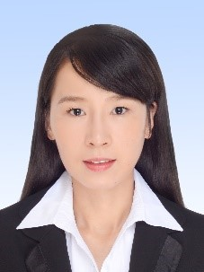
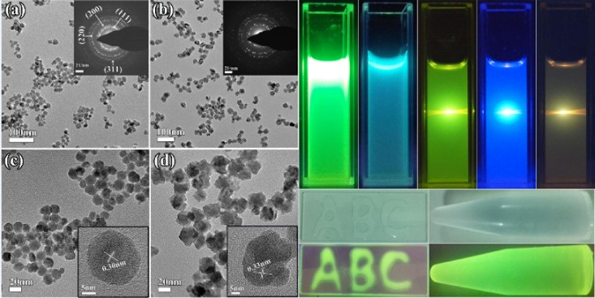
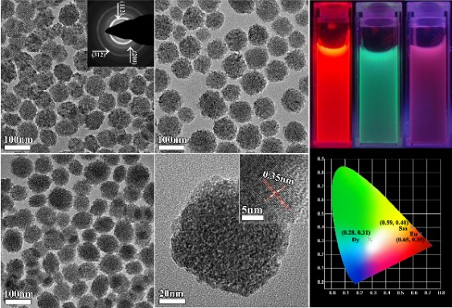
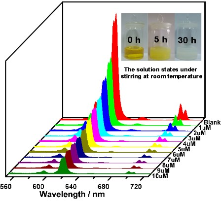
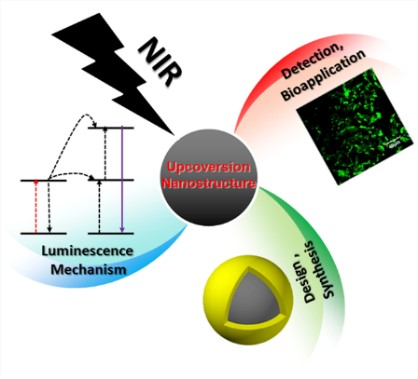
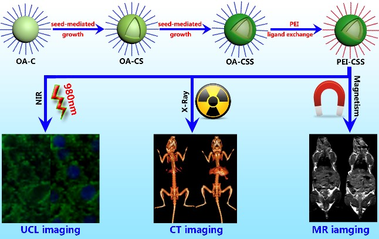
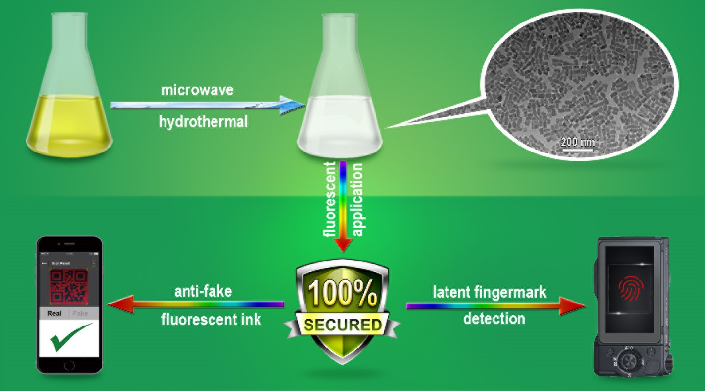

Name: Cailing Chen
Email: ccl15@mails.jlu.edu.cn
Phone: +86-13843027212
Marital status: Unmarried

Place and Date of Birth: Yulin, P. R. China | May 13th 1991
Address: State Key Laboratory of Inorganic Synthesis and Preparative Chemistry B626, Jilin University, Changchun 130012, P. R. China.
Education:
09/2009 – 06/2013: B.S. in Chemistry of Materials
College of Chemistry, Jilin University, P. R. China
09/2013 – Present: PhD Candidate in Inorganic Chemistry, Supervisor: Prof. Zhan Shi
State Key Laboratory of Inorganic Synthesis and Preparative Chemistry, Jilin University, P. R. China.
05/2016 – 08/2016: Visiting student, Supervisor: Prof. Yu Han
King Abdullah University of Science and Technology, Saudi Arabia.
Honors and Award:
- 2017, National Scholarship for Graduate Students (top 1%)
- 2016, Excellent Graduate Student Award of Jilin University (top 5%)
- 2015-2016, Second Prize of Jilin University Scholarship (top 10%)
- 2014-2015, Second Prize of Jilin University Scholarship (top 10%)
- 2013-2014, Jilin University Basic Scholarship (top 20%)
- 2013, National Scholarship for Graduate Students (top 1%)
- 2017, Second Prize of the 31th Elite Cup of Jilin University
Research Interest:
- Synthesis and surface modification of colloid nanomaterials.
- Applications of nanocomposites based on rare earth upconversion fluorescent nanoparticles
in disease diagnosis and treatment.
- Applications of inorganic fluorescent nanomaterials in detection of metal ions, biogases, etc.
Skills:
- I have developed a wide and complementary knowledge of many synthetic techniques such as
hydrothermal/solvothermal, sol-gel, co-precipitation, thermal decomposition and solid-sate
synthesis.
- I can schematically characterize the structures of nanostructured materials and measure their
physiochemical properties using a variety of facilities, including TEM, XRD, PL, SEM, UVVIS-
IR spectrometer, FT-IR, DSC/TGA, ICP, Raman, XPS. Especially TEM, I served as a
laboratory TEM technician for three years.
- I can skillfully process and analyze the raw data using many softwares, such as Digital
Micrograph, Origin, CIE, ChemBioOffice, Jade, XPS Peakfit, Endnote, PS, 3Ds max and AI.
Participate in/submit paper to academic conferences:
- 6th International Conference on Nanoscience and Technology, September 2015, Beijing
- Horiba Fluorescence Training Course, November 2015, Beijing
- 9th Academic Forum for Doctoral Students of Jilin University, November 2016, Changchun
- 7th International Conference on Nanoscience and Technology, August 2017, Beijing
Publications:
- C. Chen; Y.Yu; C. Li*; D. Liu; H. Huang, C. Liang; Y. Lou; Y. Han; Z. Shi*; S. Feng, Facile synthesis of water-soluble t-LaVO4:Ln3+ nanoparticles for anti-fake ink and latent fingermark detection. Small. 2017, Accepted, DOI:10.1002/smll.201702305.
- C. Chen; J. Liu; Y. Chen; C. Li*; X. Liu; H. Huang; C. Liang; Y. Lou; Z. Shi; S. Feng, Sub-10 nm Sr2LuF7:Yb/Er@Sr2GdF7@SrF2 up-conversion nanocrystals for up-conversion luminescence-magnetic resonance-computed tomography trimodal bioimaging. ACS Appl. Mater. Interfaces 2017,9(7), 5748-56.
- C. Chen; C. Li*; Z. Shi*, Current advances in lanthanide-doped upconversion nanostructures for detection and bioapplication. Adv. Sci. 2016, 3 (10), 1600029.
- C. Chen; J. Li; C. Li*; H. Huang; C. Liang; Y. Lou; D. Liu; Z. Wang; Z. Shi*; S. Feng, Facile synthesis of water-soluble YVO4:Eu nanoparticles for Cu2+ detection in aqueous solution. ChemistrySelect 2016, 1 (7), 1417-20.
- C. Chen; C. Li*; T. Li; J. Liu; H. Huang; T. Bai; Z. Wang; Z. Shi*; S. Feng, Water-soluble, monodisperse, lanthanide-doped Y(Gd)VO4 nanocrystals as promising multimodal bioprobe. Eur. J. Inorg. Chem. 2015, 2015 (19), 3108-15.
- C. Chen; C. Li*; L. Zhao; X. Liu; T. Bai; H. Huang; Z. Shi*; S. Feng, A facile synthesis of water-soluble BaYF5:Ln3+ NCs with excellent luminescent properties as promising contrast agent for dual-modal bioimaging. Inorg. Chem. Commun. 2015, 62, 11-4.
- C. Chen; N. Zhu; C. Li*; C. Liang; Y. Lou; Z. Shi*; S. Feng, A ratiometric fluorescent probe based on upconversion nanoparticles for peroxynitrite sensing through FRET. In preparation.
- C. Chen; C. Li*; Z. Shi*; S. Feng, A tumor imaging and therapy platform based on upconversion NaGdF4@Cu(2-x)S nanoparticles. In preparation.
- W. Cheng; C. Chen; Y. Yu; C. Li; L. Gao*; Z. Shi, Facile synthesis of ZIFs-derived hollow bimetal (Zn,Co)S nanocrystals for supercapacitors. Chemical Journal of Chinese Universities, 2017, 38(8), 1303-8.
- T. Bai; S. Xing; Y. Lou; C. Chen; H. Huang; C. Li*; Z. Shi*; S. Feng, Colloidal synthesis of quaternary wurtzite Cu3AlSnS5 nanocrystals and their photoresponsive properties. ChemPlusChem 2015, 80 (4), 652-5.
- C. Liang; J. Bao; C. Li; H. Huang; C. Chen; Y. Lou; H. Lu*; H. Lin; Z. Shi*; S. Feng, One-dimensional hierarchically porous carbon from biomass with high capacitance as supercapacitor materials. Micropor. Mesopor. Mat. 2017, 251, 77-82.
- D. Ma; B. Li*; Z. Cui; K. Liu; C. Chen; G. Li; J. Hua; B. Ma; Z. Shi*; S. Feng, Multifunctional luminescent porous organic polymer for selectively detecting iron ions and 1,4-dioxane via luminescent turn-off and turn-on sensing. ACS Appl. Mater. Interfaces 2016, 8 (36), 24097-103.
- Y. Lou; C. Li; X. Gao; T. Bai; C. Chen; H. Huang; C. Liang; Z. Shi*; S. Feng, Porous Pt nanotubes with high methanol oxidation electrocatalytic activity based on original bamboo-Shaped Te nanotubes. ACS Appl. Mater. Interfaces 2016, 8 (25), 16147-53.
- H. Huang; C. Li; S. Zhu; H. Wang; C. Chen; Z. Wang; T. Bai; Z. Shi*; S. Feng, Histidine-derived nontoxic nitrogen-doped carbon dots for sensing and bioimaging applications. Langmuir 2014, 30 (45), 13542-8.
- Y. Lou; W. Zhao; C. Li*; H. Huang; T. Bai; C. Chen; C. Liang; Z. Shi*; D. Zhang; X. Chen; S. Feng, Application of Cu3InSnSe5 heteronanostructures as counter electrodes for dye-sensitized solar cells. ACS Appl. Mater. Interfaces 2017, 9 (21), 18046-53.
- T. Bai; C. Li; F. Li; L. Zhao; Z. Wang; H. Huang; C. Chen; Y. Han; Z. Shi*; S. Feng, A simple solution-phase approach to synthesize high quality ternary AgInSe2 and band gap tunable quaternary AgIn(S1-xSex)2 nanocrystals. Nanoscale 2014, 6 (12), 6782-9.
Research Experience:
- Monodisperse, water-dispersible BaYF5:Ln3+ nanospheres and nanoflowers were synthesized via microwave-assisted modified polyol process. The obtained NCs with excellent up-down luminescent property and X-ray absorption property have great potential as optical/CT bioprobe (Inorg. Chem. Commun. 2015, 62, 11-4).
link

- Monodisperse water-dispersible Ln3+-doped YVO4 NCs were synthesized through a microwave-assisted hydrothermal method. GdCl3 gradually replaced YCl3·6H2O from 0% to 100% to obtain GdVO4:Ln3+ NCs. Y(Gd)VO4:Ln3+ CNs are promising for 3D displays and fluorescent/magnetic/CT bio-imaging applications due to their excellent properties (Eur. J. Inorg. Chem. 2015, 2015 (19), 3108-15).
link

- The monodisperse and water-soluble YVO4:Eu nanoparticles with uniform size and shape were synthesized by co-precipitation at room temperature. The strong red emission from YVO4:Eu NPs could be selectively quenched by Cu2+ ions with limit of detection as low as 0.57 μM (ChemistrySelect 2016, 1 (7), 1417-20).
link

- The current advances in lanthanide-doped upconversion nanostructures for detection and bioapplication is reviewed. The upconversion luminenscence mechanism and basic synthetic and modification methods of upconversion nanostructures are introduced, alongside the design and fabrication of core-shell nanocomposites. The application of upconversion nanostructures in detection, bioimaging and biomedical therapy are also discussed (Adv. Sci. 2016, 3 (10), 1600029).
link

- Sub-10 nm Sr2LuF7:Yb/Er@Sr2GdF7@SrF2 core-shell upconversion nanocrystals with uniform shape and high monodispersity were synthesized by a seed-mediated growth process for the first time. After modification by PEI, in vitro cell upconversion imaging with low auto-fluorescence was realized. Due to the presence of Gd3+ ions, in vivo MR imaging was also achieved with these designed NCs. More significantly, these special core-shell NCs exhibited high contrast in in-vivo X-ray CT imaging because of their good X-ray absorption ability (ACS Appl. Mater. Interfaces 2017, 9 (7), 5748-56).
link

- Highly water-soluble lanthanide (Ln3+)-doped tetragonal phase (t-) LaVO4 nanoparticles have been successfully obtained via a facile environmental-friendly microwave-assisted hydrothermal method. The aqueous solutions of Ln3+-doped t-LaVO4 exhibited excellent fluorescence properties under UV excitation. Moreover, the as-prepared nanoparticles are used in security application of anti-fake ink and detection of latent fingerprint, because of their excellent fluorescence (Small. 2017, DOI:10.1002/smll.201702305).link
